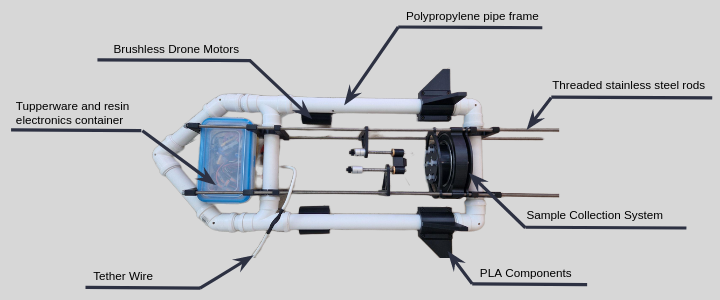
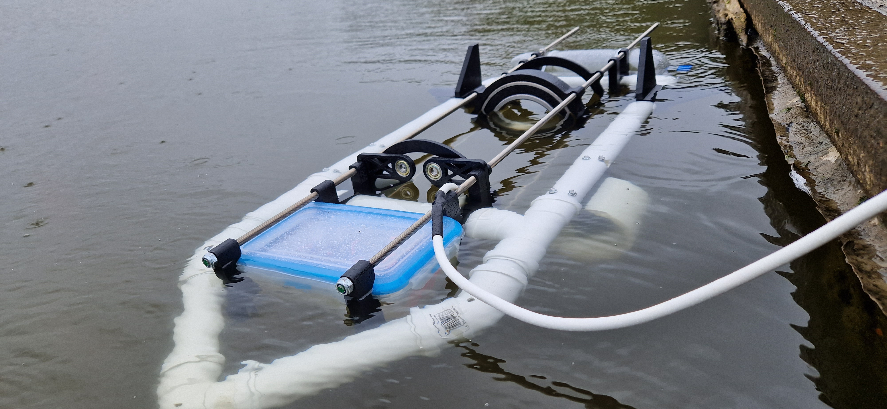
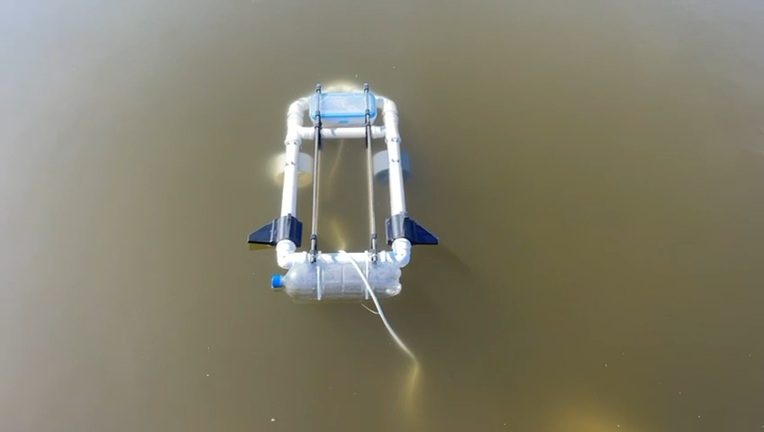
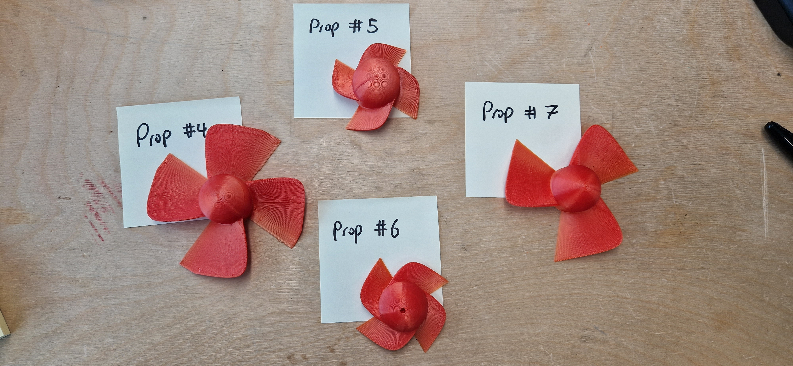
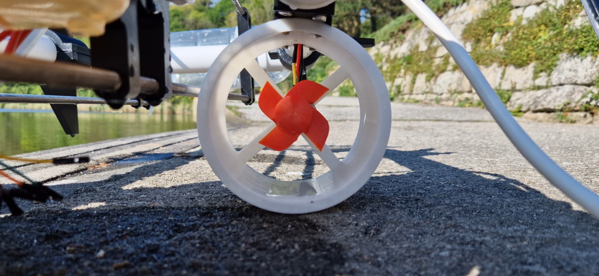
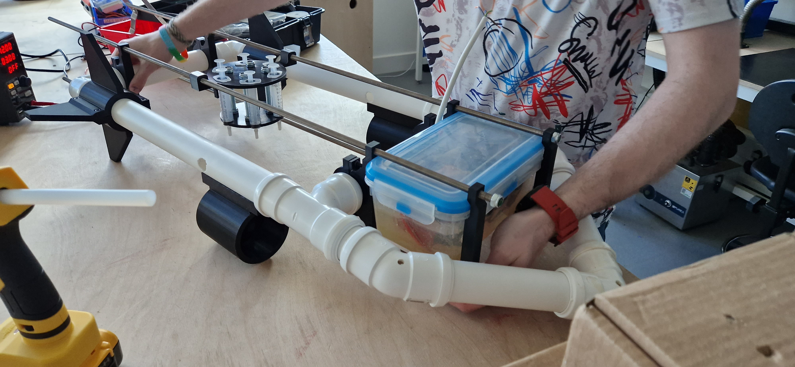

SASSIE: Water Sampling Drone
A semi-submersible system for automated environmental sampling
A semi-submersible system for automated environmental sampling
The Semi-submersible Array and Sampler for Sewage Impact on Ecosystems (SASSIE) was developed as a final-year university project. Designed by the SASDEV team—composed of two robotics engineers (myself included) and supported by three computing students—SASSIE addresses the need for safer, automated water sampling in coastal areas affected by sewage discharge.
The prototype successfully demonstrated the core sampling cycle in shallow water. While future iterations aimed to enable full submersion and more advanced autonomy, this MVP (Minimum Viable Product) laid the foundation for safer, remote environmental monitoring—removing the need for manual collection by volunteers.







As no clear guidelines existed for unmanned aquatic drones in UK coastal waters, we drafted a set of safety and operational regulations to guide deployment.